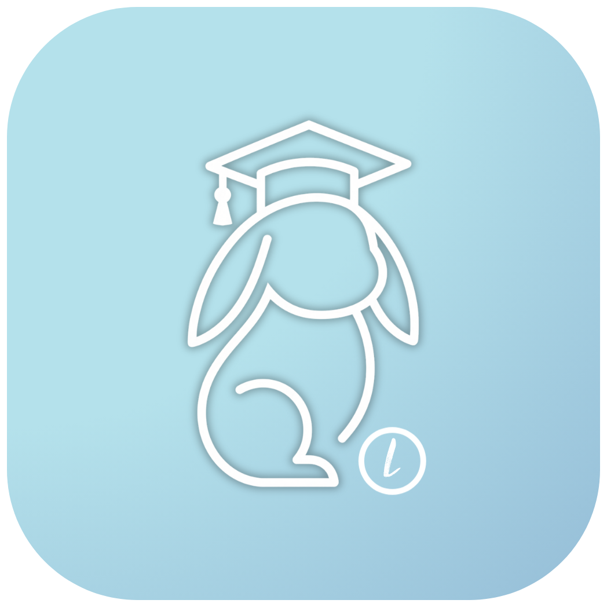
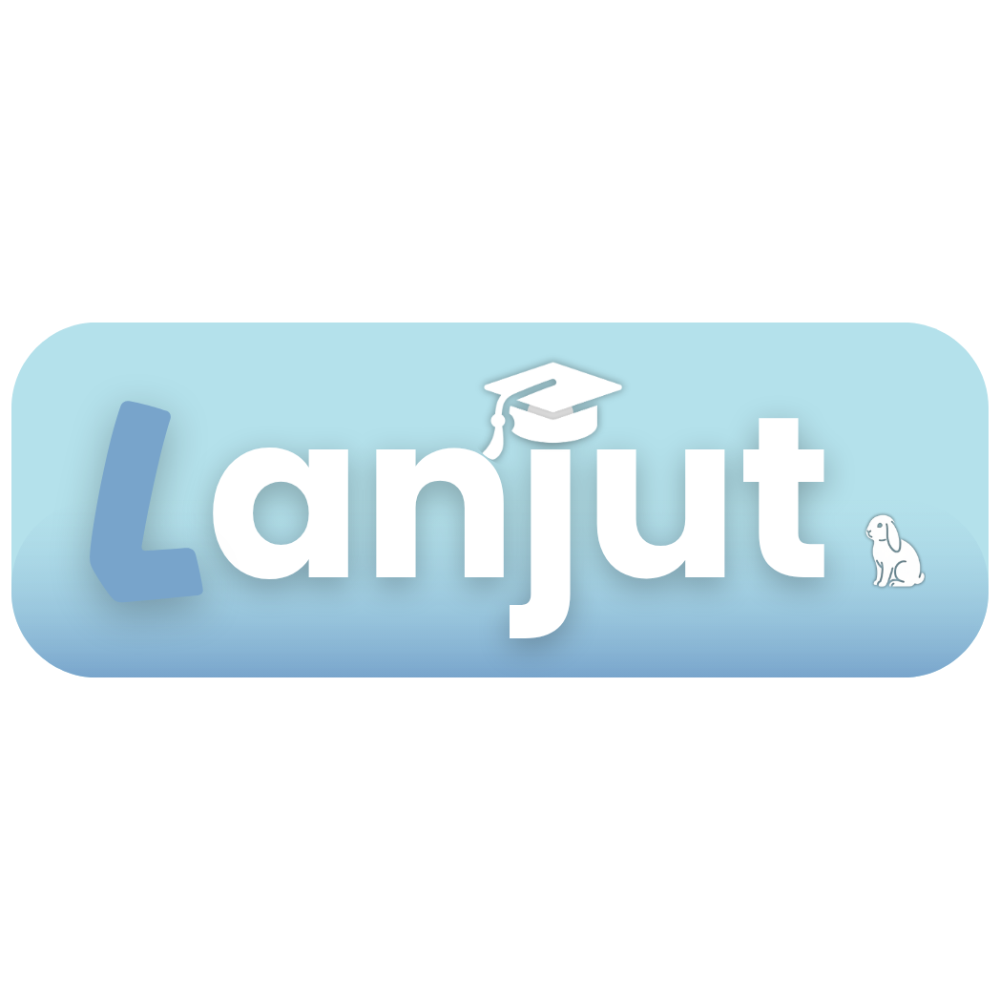

{{ obSlide.title }}
{{ obSlide.body }}
- {{ li }}

Profil kamu di Lanjut
Biar kami bisa menyaring yang perlu kamu lihat saja.


{{ pageHeaderTitle }}
Tahu harus ngapain hari ini.
{{ tenggatLabel }}
Tahapan berikutnya
Yang kamu simpan hari ini, kepakai nanti.
Mereka sudah lewat jalan ini.
Khusus SMK
Hal-hal yang memang beda buat kita.
Sebagian aturan seleksi menganggap semua pendaftar berasal dari SMA. Halaman ini merangkum bagian yang tidak berlaku sama untuk kita — dan apa yang bisa dilakukan.
{{ item.beda }}
{{ item.bisa }}
Penolong Pilih Mapel
Sudah tahu prodi tujuan?
Langsung pilih dari daftar prodi.
Mulai dari minat dan rumpun ilmu.
Pilih rumpun ilmu yang paling menarik buatmu.
{{ mapelStepCSubtitle }}
{{ grp.rumpunName }}
{{ resultProdiName }}
Ini rangkuman, bukan keputusan resmi. Cek laman SNPMB.
Daftar Periksa
Satu per satu, tidak perlu sekaligus.
{{ checklistHeaderText }}
{{ cat.name }}
Mereka sudah lewat jalan ini.
Hambatan: {{ story.hambatan }}
Yang dilakukan: {{ story.dilakukan }}
Cerita pertama sedang kami kumpulkan.
Kenal alumni SMK yang tembus PTN?
Yang kamu simpan hari ini, kepakai nanti.
{{ cat.name }}
15 menit cukup.
{{ latihanSelesaiHeadline }}
Soal dari mitra, terbuka untuk semua.
Belum ada mitra yang bergabung.
Sementara ini, latihan bisa dijalankan dari Arsip Belajar kamu sendiri.